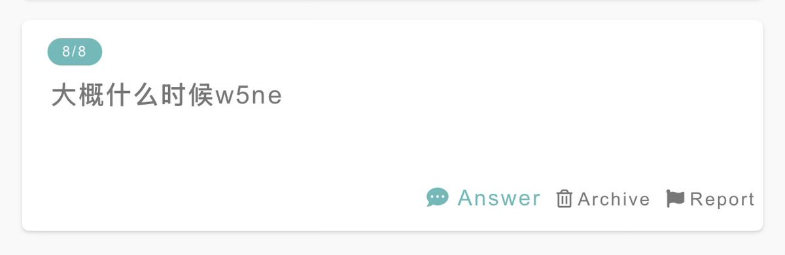

小虚空🍥
@tokerumaisurii
我不知道啊，如果大学毕业之前（一年内）可以彩框我都烧高香了，按现在的情况我的体能体力除非复健否则不能支持我打绝大部分（哪怕看得懂）的13+谱子……
#25 2025-08-10

小虚空🍥
@tokerumaisurii
我玩了，早在刚出的时候就兴冲冲地入手了这款游戏，结果没打过新手教程，怎么都打不通教学关，于是我就愤而弃坑了。
#24 2025-08-08 https://t.co/DQSqdmF56X